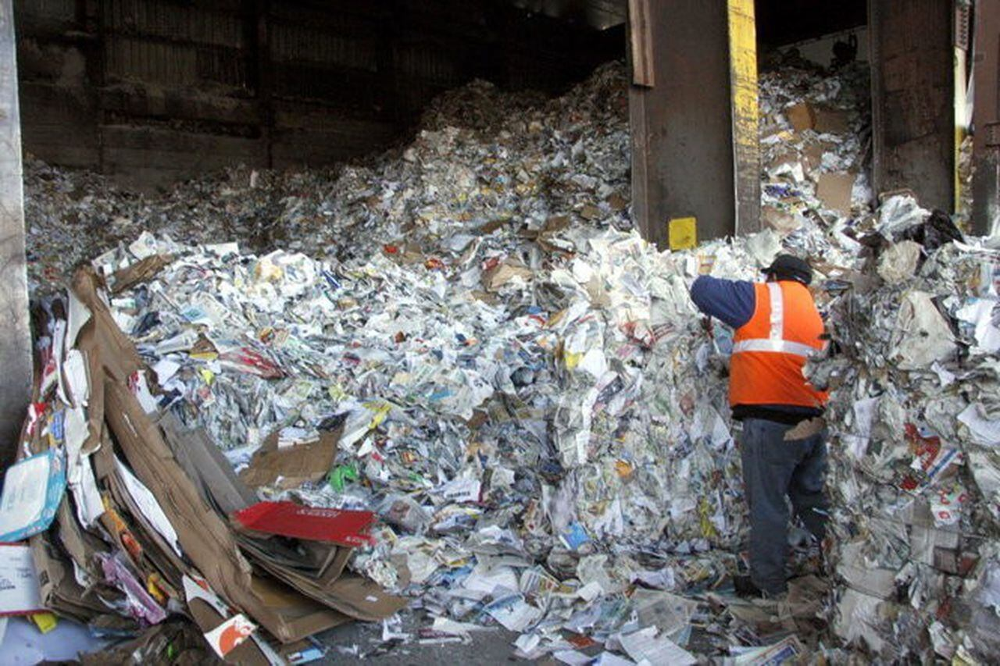

Grenergy Editorial Research
Published July 1, 2023
While not creating waste is the best way to reduce the amount of waste in the environment, ultimately reusing materials is one of the most practical methods to decrease waste.
By being more careful about how we use food and doing simple things to cut waste, we can all help solve the big problem of food waste. Whether it's buying less, finding new uses for leftovers, or giving extra food to people who need it, every little bit helps.
Food waste is a huge problem, causing big issues for the environment, economy, and society. Every year, tons of food gets thrown away globally, creating greenhouse gasses, wasting valuable resources, and leaving many people hungry. From farms to kitchens, food gets wasted at every step, often because we buy too much, store it wrong, or don't use it in time. But before you throw out that old banana or expired milk, it's good to know that small changes can help a lot. Understanding how food waste affects things and doing simple things like planning meals better, storing food properly, and giving extras to people who need them can cut down on waste significantly.
Food waste isn't just a problem—it's also a missed opportunity. By cutting down on waste, we can save money, support local farmers, and reduce the strain on our planet's resources. Additionally, reducing food waste means we can feed more people with the food we already produce, addressing issues of hunger and food insecurity. It's about making the most of what we have and ensuring that everyone has access to nutritious food. Let's strive to be more mindful consumers, appreciating the value of every morsel and making informed choices that benefit both ourselves and the world around us.
When we waste food, we're not just throwing away what's on our plate; we're also wasting all the resources that went into producing it—like water, energy, and land. Plus, all that wasted food ends up rotting in landfills, producing harmful gasses that contribute to climate change. But by being smarter about how we handle food, we can reduce these negative impacts. So let's take a moment to think before we toss, and remember that every choice we make can help build a healthier, more sustainable future for ourselves and generations to come.